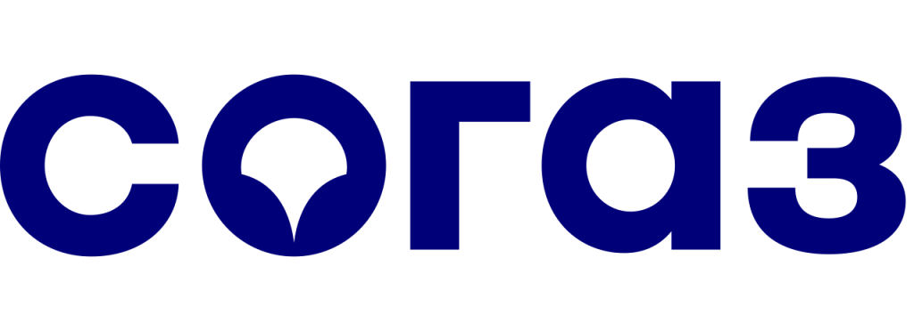
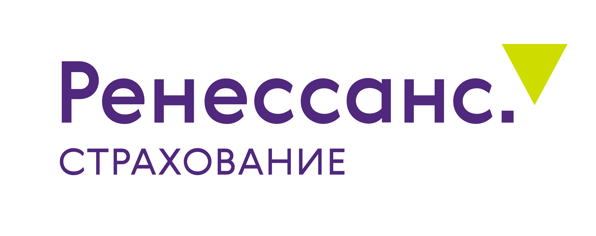

Один запрос — несколько предложений
Обратимся к подходящим страховщикам и соберём варианты. Вам не придётся повторять задачу каждой компании.
Бесплатно подберём полис под задачи и бюджет бизнеса. Поможем с оформлением и будем с вами весь срок действия ДМС.
Подбор и сопровождение
Подберём ДМС для вашей команды — с учётом её размера, географии и привычного ритма работы.
Приёмы врачей рядом с работой или домом, нужная диагностика, понятный бюджет. Поможем определить приоритеты и сравнить программы.
Офис, производство, руководители и отдельные подразделения могут нуждаться в разном наборе услуг. Сопоставим подходящие уровни ДМС.
Проверим доступные клиники по местам работы и проживания сотрудников. Обсудим условия обслуживания в поездках и дистанционные консультации.
Состав программы выбираем вместе. Каждый вид помощи, список клиник и ограничения проверяем до оформления.

Клиники, в которые удобно обращаться
Рядом с офисом или домом
Перечень услуг, медицинские показания, лимиты и исключения закрепляются в выбранной программе ДМС.
Стоимость ДМС рассчитывается индивидуально. Поможем понять, какие услуги укладываются в ваш бюджет и чем отличаются предложения.
Отметьте услуги, которые хотите обсудить.
Мы — страховое агентство. Подбираем решение под интересы вашей компании и помогаем взаимодействовать со страховщиком.
Обратимся к подходящим страховщикам и соберём варианты. Вам не придётся повторять задачу каждой компании.
Сопоставим цену, клиники, услуги и ограничения. Объясним отличия, которые легко пропустить в условиях полиса.
Поможем с вопросами по договору, изменениями и спорными ситуациями со страховой компанией. В первую очередь — в ваших интересах.
Вы рассказываете о задачах бизнеса. Мы берём на себя поиск, сравнение и помощь с оформлением.
Уточняем численность, города, задачи и бюджет.
Запрашиваем предложения подходящих страховщиков.
Разбираем стоимость, клиники, покрытие и ограничения.
Согласовываем программу и условия договора.
Помогаем оформить договор и передать сотрудникам инструкции.
После подключения остаёмся рядом — на весь срок действия полиса.
Работаем в страховании с 2014 года. Помогаем частным клиентам и бизнесу выбирать защиту и разбираться в условиях договоров.
Больше об агентстве





Для вашего запроса выберем страховщиков с подходящими программами ДМС, клиниками и условиями обслуживания.
Да, если страховщик допускает выбранный состав группы. Например, можно запросить программу для определенного подразделения или категории работников. Перед оформлением уточняют минимальную численность группы и закрепляют понятные условия предоставления льготы.
Да, при наличии такой процедуры в договоре. Страховщик уточнит, какие сведения передать, с какой даты начнется обслуживание и потребуется ли доплата за оставшийся срок.
Обычно да, в порядке, предусмотренном договором. Работодатель уведомляет страховщика об изменении списка и уточняет дату прекращения обслуживания и правила возможного перерасчета.
Покрытие прекращается в дату окончания договора, если страхование не продлили. Чтобы сотрудники не остались без доступа к программе между периодами, новый срок обслуживания лучше согласовать заранее.
Да, если стороны согласуют продление или заключение нового договора. Перед этим проверяют обновленный список сотрудников, доступность клиник, состав услуг и новый расчет стоимости.
Сначала запросите у сервисной службы страховщика конкретную причину отказа: услуга может отсутствовать в программе, требовать направления или предварительного согласования. Сохраните ответ, медицинское назначение и связанные документы. Если договор оформлен через «Прогресс Страхование», менеджер поможет разобраться в условиях и порядке дальнейшего обращения.
Иногда да, если страховщик согласует изменения. Расширение услуг, изменение перечня клиник или подключение новой группы сотрудников может потребовать дополнительного соглашения и перерасчета стоимости.
Руководитель или уполномоченный представитель работодателя — например, сотрудник HR-службы. Порядок подтверждения полномочий и обмена сведениями согласовывают при оформлении договора.
Обсудим ваши задачи и бюджет, сравним варианты и поможем выбрать программу.
Работодатель сравнивает два предложения ДМС: в первом есть клиники рядом с офисом, но стоматология не включена; во втором стоматология есть, зато для некоторых обследований нужно предварительное согласование. Даже при близкой стоимости сотрудники получат разный объем помощи. Поэтому перед оформлением проверяют перечень услуг, адреса клиник и ограничения программы.
При подборе ДМС для юридических лиц в Москве учитывают численность команды, районы обслуживания, необходимые услуги и бюджет. «Прогресс Страхование» помогает получить предложения нескольких страховщиков, сопоставить условия и оформить корпоративный договор.
Добровольное медицинское страхование для юридических лиц — это договор, по которому работодатель оплачивает страховую программу для сотрудников. Страховщик организует медицинскую помощь в объеме, указанном в договоре: приемы врачей, диагностику, лечение и другие согласованные услуги.
Страхование ДМС для юридических лиц оформляется по корпоративному договору: работодатель выступает страхователем, сотрудники — застрахованными лицами. Запись к врачу может проходить напрямую через клинику или через сервисную службу страховщика. Для отдельных обследований и госпитализации иногда нужны направление врача и предварительное согласование — этот порядок указан в программе.
В договоре проверяют список сотрудников, дату начала обслуживания, перечень медицинских услуг и сеть клиник. Например, больница может входить в сеть страховщика, но плановая госпитализация по выбранному пакету будет недоступна. Для нее нужен отдельный раздел покрытия.
Условия могут различаться для групп персонала. Организация вправе запросить несколько уровней программ, а возможность их объединения в одном договоре нужно согласовать со страховой компанией.
ДМС для организаций включают в социальный пакет, когда хотят предложить сотрудникам доступные клиники и понятный порядок обращения за медицинской помощью.
При запуске ДМС сотрудникам передают список доступных клиник, контакты сервисной службы и инструкцию по записи. В ней отдельно указывают, какие обследования требуют согласования и что делать, если клиника не может принять по полису.
Медицинская страховка для юридических лиц может состоять из базовой амбулаторной помощи и дополнительных разделов. Для каждого вида помощи нужно уточнить, какие услуги включены, где их оказывают и требуется ли согласование.
Страховка ДМС для юридических лиц может включать раздел «Стоматология», но перечень услуг внутри него отличается. В одной программе предусмотрено лечение кариеса, в другой — также удаление зубов и некоторые хирургические процедуры. Поэтому при сравнении смотрят расшифровку раздела в приложении к договору.
Отдельно проверьте порядок согласования сложной диагностики: кто оформляет направление, куда обращаться сотруднику и какие документы запрашивает страховщик. Если в ближайшей клинике нужного исследования нет, важно заранее знать, как согласуется обращение в другое учреждение.
Перед запросом предложений полезно разделить сотрудников по городам, подразделениям и режиму работы. Для офиса в центре Москвы и сменного персонала на удаленной площадке удобная сеть клиник может оказаться разной.
Например, в предложении указаны десятки клиник по Москве, но большинство сотрудников работает в одном районе. Вместо общей численности медицинской сети лучше проверить ближайшие адреса, часы приема и наличие нужных специалистов.
Если часть сотрудников работает удаленно, заранее уточните, какие клиники доступны по месту их проживания и можно ли обслуживаться вне города работодателя. Для разъездного персонала важны условия помощи в командировках.
Стоимость полиса ДМС для юридических лиц страховщик рассчитывает под конкретную группу сотрудников и набор медицинских услуг. Итоговую сумму обычно определяют после получения исходных данных; универсального тарифа для всех организаций нет.
Если у страховщика есть калькулятор ДМС для юридических лиц, указанная в нем цена обычно предварительная. Для расчета под компанию потребуются численность группы, города обслуживания, желаемые клиники, состав услуг и бюджет. Эти сведения можно передать в «Прогресс Страхование»: агентство запросит подходящие предложения и поможет сравнить их по наполнению.
Если расчет представлен в виде цены на одного сотрудника, отдельно уточните стоимость дополнительных опций, порядок доплаты за новых работников и условия перерасчета при увольнении. Эти параметры влияют на расходы компании в течение года.
Для оформления работодатель передает параметры программы и согласует условия со страховщиком. «Прогресс Страхование» помогает пройти подбор и оформление по следующей схеме.
Если компания продлевает существующее ДМС, полезно до расчета собрать обращения сотрудников по недоступным клиникам, сложной записи и отказам в согласовании. Эти вопросы стоит включить в запрос при продлении или смене страховщика.
Для оформления корпоративного договора обычно нужны реквизиты организации, сведения об уполномоченном представителе и список работников для подключения. Формат и состав данных определяет страховщик. Передавать персональные сведения следует через согласованный безопасный канал и с соблюдением правил обработки персональных данных.
При расчете налога на прибыль взносы по договорам ДМС работников сроком не менее года могут учитываться в расходах на оплату труда. Пункт 16 статьи 255 НК РФ устанавливает совокупный предел 6% расходов на оплату труда для предусмотренных им медицинских расходов. Для отдельных налоговых режимов правила учета будут другими.
По подпункту 5 пункта 1 статьи 422 НК РФ страховые платежи работодателя по соответствующим договорам ДМС, заключенным на срок не менее года, не облагаются страховыми взносами при соблюдении условий нормы.
Бухгалтерии стоит проверить срок договора, документальное основание предоставления ДМС работникам, порядок учета взносов и последствия изменений в списках застрахованных. Порядок учета зависит от системы налогообложения компании и условий договора.
HR-отделу сложно сравнивать корпоративные программы, если один страховщик прислал общую цену со стоматологией, другой — стоимость только поликлинического обслуживания, а третий включил в расчет стационар. «Прогресс Страхование» помогает привести такие предложения к сопоставимому виду: разделить основные и дополнительные услуги, уточнить ограничения и сеть клиник.
Когда организация выбирает страховую компанию для ДМС юридических лиц, нужно проверить условия обслуживания: где принимают сотрудников, как согласуют диагностику и какие ограничения установлены для стационара. За исполнение договора отвечает страховщик. «Прогресс Страхование» помогает сопоставить эти параметры до оформления полиса.
«Прогресс Страхование» сравнивает доступные предложения среди топ-25 страховщиков. Не каждый запрос направляют во все компании: состав подбора зависит от численности коллектива, географии и необходимых услуг. Менеджер пояснит, чем различаются подходящие варианты, включая ограничения, которые не видны по одной цене.
После оформления агентство сопровождает своих клиентов в течение срока договора. Если возникают вопросы по условиям полиса или порядку обращения за медицинской помощью, менеджер поможет сориентироваться и связаться со страховщиком.
Оставьте заявку, укажите численность команды, города обслуживания, желаемые услуги и ориентировочный бюджет. Агентство подготовит предложения для сравнения и поможет оформить выбранную программу.